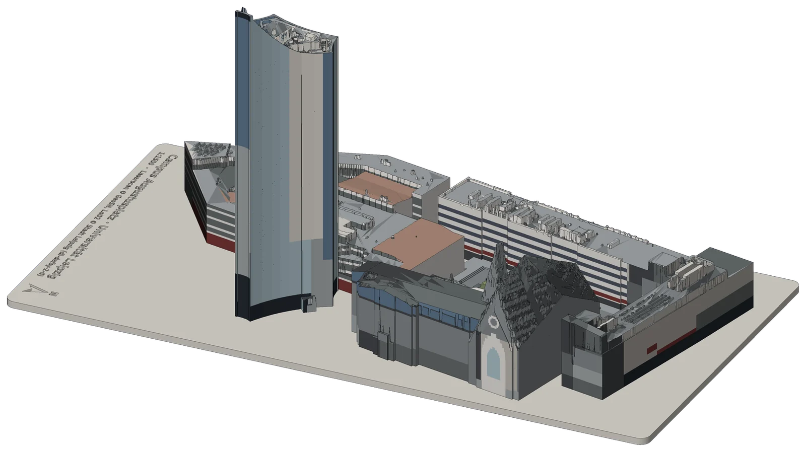

<title>Campus Augustusplatz</title>
<meta name="claude:viewport-fit-sides" content="cover">
<meta name="description" content="Steckbares, leuchtendes 3D-Druckmodell des Campus Augustusplatz der Universität Leipzig im Maßstab 1:1300.">
<link rel="preconnect" href="https://fonts.googleapis.com">
<link rel="preconnect" href="https://fonts.gstatic.com" crossorigin>
<link rel="stylesheet" href="https://fonts.googleapis.com/css2?family=Instrument+Sans:wght@400;500;600;700&family=IBM+Plex+Mono:wght@400;500&display=swap">
<style>
/* Layout: Produktseite in hellen Bändern mit zwei Nachtbändern (Licht, Konstruktion); Bühnen mit dem echten 3D-Modell, Text bleibt schmal. */
:root {
  --bg: #f5f5f2;
  --surface: #ffffff;
  --ink: #17181b;
  --muted: #696b71;
  --line: #e0dfda;
  --accent: #c9821b;          /* Licht der LED, nur für Flächen und große Schrift */
  --accent-ink: #94570a;      /* dasselbe Licht als lesbare Textfarbe */
  --cut: #e2733c;             /* Schnittfläche, wie die Gewölbe in den Schnittbildern */
  --night: #0a0b0d;
  --night-2: #141519;
  --night-ink: #f3f1ec;
  --night-muted: #93959c;
  --night-line: #26272d;
  --font-display: "Instrument Sans", "Helvetica Neue", Arial, system-ui, sans-serif;
  --font-body: "Instrument Sans", "Helvetica Neue", Arial, system-ui, sans-serif;
  --font-mono: "IBM Plex Mono", ui-monospace, "SFMono-Regular", Menlo, monospace;
  --wrap: 1120px;
  --nav-h: 52px;
}
@media (prefers-color-scheme: dark) {
  :root:not([data-theme="light"]) {
    --bg: #0e0f12; --surface: #17181c; --ink: #f2f1ed; --muted: #9b9da4; --line: #272830;
    --accent: #f0ae4a; --accent-ink: #f0ae4a; --cut: #ef8550;
    --night: #050607; --night-2: #101114; --night-line: #23242a;
    color-scheme: dark;
  }
}
:root[data-theme="dark"] {
  --bg: #0e0f12; --surface: #17181c; --ink: #f2f1ed; --muted: #9b9da4; --line: #272830;
  --accent: #f0ae4a; --accent-ink: #f0ae4a; --cut: #ef8550;
  --night: #050607; --night-2: #101114; --night-line: #23242a;
  color-scheme: dark;
}

* { box-sizing: border-box; }
html { scroll-behavior: smooth; scroll-padding-top: calc(var(--nav-h) + 8px); }
body {
  background: var(--bg); color: var(--ink);
  font-family: var(--font-body); font-size: 17px; line-height: 1.5;
  -webkit-font-smoothing: antialiased; text-rendering: optimizeLegibility;
  overflow-x: hidden;
}
body::before { content: ""; position: fixed; inset: 0 0 auto; height: env(safe-area-inset-top, 0px); z-index: 60; background: var(--bg); }
a { color: inherit; }
h1, h2, h3 { font-family: var(--font-display); text-wrap: balance; margin: 0; }
p { margin: 0; }
.wrap {
  max-width: var(--wrap); margin: 0 auto;
  padding-left: max(16px, env(safe-area-inset-left, 0px));
  padding-right: max(16px, env(safe-area-inset-right, 0px));
}
.mono { font-family: var(--font-mono); font-variant-numeric: tabular-nums; }
.eyebrow {
  font-family: var(--font-mono); font-size: 12.5px; letter-spacing: .09em; text-transform: uppercase;
  color: var(--accent-ink);
}
sup.fn { font-size: .6em; color: var(--muted); margin-left: 1px; }
sup.fn a { text-decoration: none; }
:focus-visible { outline: 2px solid var(--accent); outline-offset: 3px; border-radius: 4px; }

/* ---------- Navigation ---------- */
.nav {
  position: sticky; top: env(safe-area-inset-top, 0px); z-index: 50;
  height: var(--nav-h);
  background: color-mix(in srgb, var(--bg) 78%, transparent);
  backdrop-filter: saturate(1.6) blur(18px); -webkit-backdrop-filter: saturate(1.6) blur(18px);
  border-bottom: 1px solid color-mix(in srgb, var(--line) 70%, transparent);
}
.nav.dark { background: color-mix(in srgb, var(--night) 74%, transparent); border-bottom-color: var(--night-line); color: var(--night-ink); }
.nav.dark ul, .nav.dark .scale { color: var(--night-muted); }
.nav.dark ul a:hover { color: var(--night-ink); }
.nav.dark .scale { border-color: var(--night-line); }
.nav { transition: background .3s, color .3s, border-color .3s; }
.nav .wrap { height: 100%; display: flex; align-items: center; justify-content: space-between; gap: 16px; }
.nav .brand { font-weight: 600; font-size: 17px; letter-spacing: -.01em; text-decoration: none; white-space: nowrap; }
.nav ul { list-style: none; margin: 0; padding: 0; display: flex; gap: 22px; font-size: 13px; color: var(--muted); }
.nav ul a { text-decoration: none; }
.nav ul a:hover { color: var(--ink); }
.nav .scale { font-family: var(--font-mono); font-size: 12px; color: var(--muted); border: 1px solid var(--line); border-radius: 999px; padding: 3px 10px; white-space: nowrap; }
@media (max-width: 760px) { .nav ul { display: none; } }

/* ---------- Hero ---------- */
.hero { padding-block: 44px 8px; text-align: center; }
.hero .eyebrow { display: block; margin-bottom: 18px; }
.hero h1 {
  font-size: clamp(44px, 8.4vw, 104px); font-weight: 600; letter-spacing: -.045em; line-height: .98;
}
.hero .tag {
  margin: 18px auto 0; max-width: 22ch;
  font-family: var(--font-display); font-size: clamp(24px, 3.4vw, 40px); font-weight: 500; letter-spacing: -.025em; line-height: 1.12;
  color: var(--muted);
}
.hero .tag b { color: var(--ink); font-weight: 600; }
.cta { margin-top: 28px; display: flex; gap: 14px; justify-content: center; flex-wrap: wrap; }
.btn {
  display: inline-flex; align-items: center; gap: 6px; padding: 11px 22px; border-radius: 999px;
  font-size: 15px; font-weight: 500; text-decoration: none; border: 1px solid transparent;
}
.btn.primary { background: var(--ink); color: var(--bg); }
.btn.ghost { color: var(--accent-ink); }
.btn.ghost::after { content: "›"; font-size: 1.25em; line-height: 1; transform: translateY(-1px); }

.stage {
  position: relative; margin: 8px auto 0; max-width: 1280px;
  height: clamp(340px, calc(100svh - 430px), 760px); width: 100%;
}
.stage canvas { position: absolute; inset: 0; width: 100%; height: 100%; display: block; touch-action: pan-y; cursor: grab; opacity: 0; transition: opacity .9s ease; }
.stage canvas.ready { opacity: 1; }
.stage canvas:active { cursor: grabbing; }
.stage .poster { position: absolute; inset: 6% 8%; width: 84%; height: 88%; object-fit: contain; transition: opacity .9s ease; }
.stage.live .poster { opacity: 0; }
.stage .hint {
  position: absolute; left: 50%; bottom: 6px; transform: translateX(-50%);
  font-size: 12px; color: var(--muted); font-family: var(--font-mono); letter-spacing: .04em; white-space: nowrap;
}
@media (max-width: 640px) { .hero { padding-block: 40px 8px; } .stage { height: auto; aspect-ratio: 4 / 5; } }

/* ---------- Kennzahlen ---------- */
.stats { padding-block: 36px 88px; }
.stats ul {
  list-style: none; margin: 0; padding: 0;
  display: grid; grid-template-columns: repeat(5, minmax(0, 1fr)); gap: 0;
  border-top: 1px solid var(--line);
}
.stats li { padding: 22px 16px 0 0; }
.stats .n { font-family: var(--font-display); font-size: clamp(30px, 3.8vw, 46px); font-weight: 600; letter-spacing: -.035em; line-height: 1; font-variant-numeric: tabular-nums; }
.stats .l { margin-top: 8px; font-size: 14px; color: var(--muted); line-height: 1.35; }
@media (max-width: 820px) { .stats ul { grid-template-columns: repeat(2, minmax(0, 1fr)); row-gap: 8px; } .stats li:last-child { grid-column: 1 / -1; } }

/* ---------- Statement ---------- */
.statement { padding-block: 40px 120px; }
.statement p {
  max-width: 30ch;
  font-family: var(--font-display); font-size: clamp(28px, 4.2vw, 52px); font-weight: 600; letter-spacing: -.035em; line-height: 1.1;
  color: var(--muted);
}
.statement p span { color: var(--ink); }

/* ---------- Abschnittsköpfe ---------- */
.section { padding-block: 112px; }
.section-head { max-width: 760px; }
.section-head .eyebrow { display: block; margin-bottom: 14px; }
.section-head h2 { font-size: clamp(36px, 5.6vw, 68px); font-weight: 600; letter-spacing: -.04em; line-height: 1.02; }
.section-head p { margin-top: 20px; font-size: clamp(18px, 1.6vw, 21px); color: var(--muted); max-width: 58ch; line-height: 1.45; }
.section-head p b { color: var(--ink); font-weight: 600; }

/* ---------- Datenquellen ---------- */
.sources { background: var(--surface); }
.seg {
  margin-top: 40px; display: inline-flex; padding: 4px; gap: 2px; border-radius: 999px;
  background: color-mix(in srgb, var(--ink) 6%, transparent);
}
.seg button {
  font: 500 14px var(--font-body); color: var(--muted); background: transparent; border: 0; cursor: pointer;
  padding: 8px 18px; border-radius: 999px;
}
.seg button[aria-selected="true"] { background: var(--surface); color: var(--ink); box-shadow: 0 1px 3px rgba(0,0,0,.12); }
.src-view { margin-top: 24px; display: grid; grid-template-columns: minmax(0, 1.6fr) minmax(0, 1fr); gap: 48px; align-items: center; }
.src-img { position: relative; aspect-ratio: 562 / 330; max-width: 100%; }
.src-img img { position: absolute; inset: 0; width: 100%; height: 100%; object-fit: contain; transition: opacity .45s ease; }
.src-img img:not(.on) { opacity: 0; }
.src-text h3 { font-size: 28px; font-weight: 600; letter-spacing: -.025em; }
.src-text p { margin-top: 12px; color: var(--muted); max-width: 42ch; }
.src-text .meta { margin-top: 18px; font-size: 13px; color: var(--muted); font-family: var(--font-mono); }
@media (max-width: 760px) { .src-view { grid-template-columns: 1fr; gap: 20px; } }

/* ---------- Funktionen (Kacheln) ---------- */
.features .grid {
  margin-top: 56px;
  display: grid; grid-template-columns: repeat(6, minmax(0, 1fr)); gap: 16px;
}
.tile {
  grid-column: span 2; min-width: 0;
  background: var(--surface); border-radius: 26px; padding: 30px 28px 28px;
  display: flex; flex-direction: column; gap: 14px; overflow: hidden; position: relative;
}
.tile.w3 { grid-column: span 3; }
.tile.w4 { grid-column: span 4; }
.tile h3 { font-size: 26px; font-weight: 600; letter-spacing: -.025em; line-height: 1.1; }
.tile p { color: var(--muted); font-size: 16px; line-height: 1.45; }
.tile p b { color: var(--ink); font-weight: 600; }
.tile .k { font-family: var(--font-mono); font-size: 12px; letter-spacing: .06em; text-transform: uppercase; color: var(--accent-ink); }
.tile .fig { margin-top: auto; padding-top: 8px; }
.tile.dark { background: var(--night); color: var(--night-ink); }
.tile.dark p { color: var(--night-muted); }
.tile.dark p b { color: var(--night-ink); }
.tile.dark .k { color: var(--accent); }
@media (max-width: 980px) { .tile, .tile.w3, .tile.w4 { grid-column: span 3; } }
@media (max-width: 640px) { .features .grid { grid-template-columns: minmax(0, 1fr); } .tile, .tile.w3, .tile.w4 { grid-column: auto; } }

.docks { display: grid; gap: 2px; }
.docks button {
  display: grid; grid-template-columns: 10px 1fr auto auto; align-items: center; gap: 10px; text-align: left;
  font: 400 13.5px var(--font-body); color: var(--night-ink); background: transparent; border: 0; border-top: 1px solid var(--night-line);
  padding: 7px 0; cursor: pointer;
}
.docks button::before { content: ""; width: 8px; height: 8px; border-radius: 50%; background: var(--night-line); transition: background .25s, box-shadow .25s; }
.docks button[aria-pressed="true"]::before { background: var(--accent); box-shadow: 0 0 8px var(--accent); }
.docks em { font-style: normal; font-family: var(--font-mono); font-size: 11.5px; color: var(--night-muted); }
.docks button::after { content: "HIGH · frei"; font-family: var(--font-mono); font-size: 11.5px; color: var(--night-muted); min-width: 9.5ch; text-align: right; }
.docks button[aria-pressed="true"]::after { content: "LOW · steckt"; color: var(--accent); }
.pins { display: grid; grid-template-columns: repeat(4, minmax(0, 1fr)); gap: 10px; }
.pin { border: 1px solid var(--line); border-radius: 14px; padding: 12px 12px 10px; }
.pin i { display: block; width: 12px; height: 12px; border-radius: 50%; margin-bottom: 10px; background: var(--c); box-shadow: 0 0 0 3px color-mix(in srgb, var(--c) 22%, transparent); }
.pin b { display: block; font-size: 14px; font-weight: 600; }
.pin span { font-family: var(--font-mono); font-size: 11.5px; color: var(--muted); }
@media (max-width: 420px) { .pins { grid-template-columns: repeat(2, minmax(0, 1fr)); } }

.oled-frame { background: #050608; border-radius: 12px; padding: 14px; border: 1px solid #23252b; max-width: 100%; }
.oled-frame canvas { display: block; width: 100%; aspect-ratio: 2 / 1; image-rendering: pixelated; }
.oled-cap { margin-top: 8px; font-family: var(--font-mono); font-size: 11.5px; color: var(--night-muted); }

.switch-fig { display: flex; align-items: center; gap: 18px; }
.rocker {
  width: 54px; height: 80px; border-radius: 8px; background: #1c1d21; padding: 6px; flex: none;
  box-shadow: inset 0 0 0 1px #34363d;
}
.rocker button {
  width: 100%; height: 100%; border: 0; border-radius: 4px; cursor: pointer; position: relative;
  background: linear-gradient(#2c2e34, #121316); transition: background .25s;
}
.rocker button::before, .rocker button::after { position: absolute; left: 50%; transform: translateX(-50%); color: #8c8f97; font: 600 12px var(--font-mono); }
.rocker button::before { content: "I"; top: 9px; }
.rocker button::after { content: "O"; bottom: 8px; }
.rocker button[aria-pressed="true"] { background: linear-gradient(#121316, #2c2e34); }
.rocker button[aria-pressed="true"]::before { color: var(--accent); }
.switch-state { font-family: var(--font-mono); font-size: 13px; color: var(--muted); }
.switch-state b { color: var(--ink); font-weight: 500; }

.hatfig svg, .mech svg, .battery svg { display: block; width: 100%; height: auto; }
.colorimg { margin: 6px -12px -10px; }
.colorimg img { display: block; width: 100%; height: auto; }

/* ---------- Licht (Nachtband) ---------- */
.night { background: var(--night); color: var(--night-ink); }
.night .section-head p { color: var(--night-muted); }
.night .section-head p b { color: var(--night-ink); }
.night .eyebrow { color: var(--accent); }
.light-stage { position: relative; margin-top: 40px; aspect-ratio: 16 / 8.5; max-height: 76vh; width: 100%; }
.light-stage::before {
  content: ""; position: absolute; inset: 10% 15% 0; border-radius: 50%;
  background: radial-gradient(closest-side, color-mix(in srgb, var(--glow, #ffc46b) 26%, transparent), transparent);
  filter: blur(30px); transition: background .6s;
}
.light-stage canvas { position: absolute; inset: 0; width: 100%; height: 100%; display: block; touch-action: pan-y; cursor: grab; }
.light-stage .fallback { position: absolute; inset: 0; display: grid; place-items: center; color: var(--night-muted); font-size: 14px; }
@media (max-width: 640px) { .light-stage { aspect-ratio: 1 / 1; } }
.controls { margin-top: 24px; display: flex; flex-wrap: wrap; gap: 28px 48px; justify-content: center; }
.ctl { display: flex; flex-direction: column; gap: 12px; align-items: center; }
.ctl > span { font-family: var(--font-mono); font-size: 12px; letter-spacing: .08em; text-transform: uppercase; color: var(--night-muted); }
.swatches { display: flex; gap: 12px; flex-wrap: wrap; justify-content: center; }
.swatches button {
  width: 30px; height: 30px; border-radius: 50%; border: 0; cursor: pointer; background: var(--c);
  box-shadow: 0 0 0 2px var(--night), 0 0 0 3px transparent; transition: box-shadow .2s;
}
.swatches button[aria-pressed="true"] { box-shadow: 0 0 0 2px var(--night), 0 0 0 4px var(--night-ink); }
.swatches button.rainbow { background: conic-gradient(#ff5d5d, #ffc34d, #7ee07e, #57c7ff, #8f7bff, #ff6fd8, #ff5d5d); }
.pills { display: flex; gap: 4px; padding: 4px; border-radius: 999px; background: var(--night-2); flex-wrap: wrap; justify-content: center; }
.pills button { font: 500 14px var(--font-body); color: var(--night-muted); background: transparent; border: 0; padding: 7px 16px; border-radius: 999px; cursor: pointer; }
.pills button[aria-pressed="true"] { background: var(--night-ink); color: var(--night); }
.light-facts { margin-top: 64px; display: grid; grid-template-columns: repeat(3, minmax(0, 1fr)); gap: 32px; border-top: 1px solid var(--night-line); padding-top: 28px; }
.light-facts b { display: block; font-family: var(--font-display); font-size: 22px; font-weight: 600; letter-spacing: -.02em; }
.light-facts p { margin-top: 6px; color: var(--night-muted); font-size: 15px; }
@media (max-width: 760px) { .light-facts { grid-template-columns: minmax(0, 1fr); gap: 22px; } }

/* ---------- Konstruktion (Scroll-Bühne) ---------- */
.build { background: var(--night); color: var(--night-ink); position: relative; height: calc(var(--steps) * 85vh + 100vh); }
.build-sticky { position: sticky; top: 0; height: 100vh; overflow: hidden; }
.build-sticky canvas { position: absolute; inset: 0; width: 100%; height: 100%; display: block; }
.build-intro { position: absolute; top: calc(var(--nav-h) + 28px); left: 0; right: 0; pointer-events: none; }
.build-intro .eyebrow { color: var(--accent); }
.build-copy { position: absolute; left: 0; right: 0; bottom: 8vh; pointer-events: none; }
.build-copy .wrap { position: relative; min-height: 220px; }
.step {
  position: absolute; left: max(16px, env(safe-area-inset-left, 0px)); bottom: 0; max-width: 400px;
  transition: opacity .2s ease, transform .2s ease; opacity: 0; transform: translateY(14px);
}
.step.on { opacity: 1; transform: none; transition: opacity .45s ease .18s, transform .45s ease .18s; }
.step .no { font-family: var(--font-mono); font-size: 12.5px; color: var(--accent); letter-spacing: .08em; }
.step h3 { margin-top: 8px; font-size: clamp(28px, 3.4vw, 40px); font-weight: 600; letter-spacing: -.035em; line-height: 1.05; }
.step p { margin-top: 12px; color: var(--night-muted); font-size: 16.5px; line-height: 1.45; }
.step p b { color: var(--night-ink); font-weight: 600; }
.step dl { margin: 16px 0 0; display: grid; grid-template-columns: auto 1fr; gap: 4px 16px; font-size: 13.5px; }
.step dt { font-family: var(--font-mono); color: var(--night-ink); font-variant-numeric: tabular-nums; }
.step dd { margin: 0; color: var(--night-muted); }
.progress { position: absolute; right: max(16px, env(safe-area-inset-right, 0px)); top: 50%; transform: translateY(-50%); display: flex; flex-direction: column; gap: 10px; }
.progress span { width: 6px; height: 6px; border-radius: 50%; background: var(--night-line); transition: background .3s, transform .3s; }
.progress span.on { background: var(--night-ink); transform: scale(1.4); }
.labels { position: absolute; inset: 0; pointer-events: none; }
.lab {
  position: absolute; left: 0; top: 0; white-space: nowrap;
  font-size: 12.5px; font-family: var(--font-mono); color: var(--night-ink);
  padding: 4px 9px 4px 8px; border-radius: 999px;
  background: color-mix(in srgb, var(--night-2) 82%, transparent); border: 1px solid var(--night-line);
  transform: translate(-50%, -140%); opacity: 0; transition: opacity .3s;
}
.lab::after { content: ""; position: absolute; left: 50%; top: 100%; width: 1px; height: 14px; background: color-mix(in srgb, var(--night-ink) 45%, transparent); }
@media (max-width: 760px) {
  .build-copy { bottom: 3vh; }
  .step { right: max(16px, env(safe-area-inset-right, 0px)); max-width: none; background: color-mix(in srgb, var(--night) 84%, transparent); padding: 16px 18px; border-radius: 18px; backdrop-filter: blur(10px); -webkit-backdrop-filter: blur(10px); }
  .step dl { display: none; }
  .lab { font-size: 11px; }
  .progress { display: none; }
}

/* ---------- Steckmechanismus ---------- */
.mech-grid { margin-top: 56px; display: grid; grid-template-columns: minmax(0, 1.35fr) minmax(0, 1fr); gap: 56px; align-items: start; }
.mech { background: var(--surface); border-radius: 26px; padding: 22px; overflow-x: auto; }
.mech svg { min-width: 560px; }
.mech .cap { margin-top: 8px; font-size: 13px; color: var(--muted); }
.specs-mini { display: grid; grid-template-columns: repeat(2, minmax(0, 1fr)); gap: 28px 24px; }
.specs-mini div { border-top: 1px solid var(--line); padding-top: 14px; }
.specs-mini b { display: block; font-family: var(--font-display); font-size: 34px; font-weight: 600; letter-spacing: -.035em; line-height: 1; font-variant-numeric: tabular-nums; }
.specs-mini b small { font-size: .5em; font-weight: 500; color: var(--muted); letter-spacing: 0; margin-left: 3px; }
.specs-mini span { display: block; margin-top: 8px; font-size: 14px; color: var(--muted); line-height: 1.35; }
@media (max-width: 900px) { .mech-grid { grid-template-columns: minmax(0, 1fr); gap: 36px; } }

/* ---------- Erprobt ---------- */
.rounds { margin-top: 48px; display: grid; grid-template-columns: repeat(auto-fill, minmax(min(100%, 240px), 1fr)); gap: 12px; }
.round { background: var(--surface); border-radius: 18px; padding: 18px 18px 16px; display: flex; flex-direction: column; gap: 6px; min-width: 0; }
.round .r { display: flex; justify-content: space-between; align-items: baseline; gap: 8px; font-family: var(--font-mono); font-size: 12px; color: var(--muted); }
.round .r em { font-style: normal; color: var(--accent-ink); font-weight: 500; }
.round h3 { font-size: 18px; font-weight: 600; letter-spacing: -.015em; }
.round p { font-size: 14.5px; color: var(--muted); line-height: 1.4; }

/* ---------- Technische Daten ---------- */
.tech { background: var(--surface); }
.tech table { width: 100%; border-collapse: collapse; margin-top: 48px; }
.tech th, .tech td { text-align: left; vertical-align: top; padding: 20px 0; border-top: 1px solid var(--line); }
.tech th { width: 30%; padding-right: 24px; font-family: var(--font-display); font-size: 19px; font-weight: 600; letter-spacing: -.015em; }
.tech td { font-size: 16px; color: var(--muted); line-height: 1.55; }
.tech td b { color: var(--ink); font-weight: 500; }
.tech td .mono { font-size: 14.5px; }
@media (max-width: 640px) { .tech th, .tech td { display: block; width: 100%; } .tech th { padding-bottom: 4px; } .tech td { border-top: 0; padding-top: 0; } }

/* ---------- Fuß ---------- */
footer { padding-block: 56px 72px; font-size: 13px; color: var(--muted); line-height: 1.55; }
footer ol { margin: 0; padding-left: 18px; display: grid; gap: 6px; max-width: 86ch; }
footer .src { margin-top: 28px; padding-top: 20px; border-top: 1px solid var(--line); display: flex; flex-wrap: wrap; gap: 8px 28px; }

@media (prefers-reduced-motion: reduce) {
  html { scroll-behavior: auto; }
  .step, .stage canvas, .stage .poster, .src-img img { transition: none; }
}
</style>

<header class="nav">
  <div class="wrap">
    <a class="brand" href="#top">Campus Augustusplatz</a>
    <ul>
      <li><a href="#ueberblick">Überblick</a></li>
      <li><a href="#funktionen">Funktionen</a></li>
      <li><a href="#licht">Licht</a></li>
      <li><a href="#konstruktion">Konstruktion</a></li>
      <li><a href="#technik">Technische Daten</a></li>
    </ul>
    <span class="scale">1 : 1300</span>
  </div>
</header>

<main id="top">
  <!-- ======================= Hero ======================= -->
  <section class="hero">
    <div class="wrap">
      <span class="eyebrow">Universität Leipzig · Augustusplatz</span>
      <h1>Campus Augustusplatz</h1>
      <p class="tag"><b>Der Campus zum Aufstecken.</b> Und zum Leuchten.</p>
      <div class="cta">
        <a class="btn primary" href="#konstruktion">Konstruktion ansehen</a>
        <a class="btn ghost" href="#technik">Technische Daten</a>
      </div>
    </div>
    <div class="stage" id="heroStage">
      
      <canvas id="heroCanvas" aria-label="3D-Modell der Steckplatte mit allen Gebäuden, mit der Maus drehbar"></canvas>
      <span class="hint" id="heroHint">Ziehen zum Drehen</span>
    </div>
  </section>

  <section class="stats" aria-label="Kennzahlen">
    <div class="wrap">
      <ul>
        <li><div class="n">1:1300</div><div class="l">Maßstab, 1 mm ≙ 1,3 m</div></li>
        <li><div class="n">6</div><div class="l">Gebäude, einzeln steckbar</div></li>
        <li><div class="n">28</div><div class="l">Kontakte in 7 Docks</div></li>
        <li><div class="n">9</div><div class="l">LEDs WS2812B, einzeln adressierbar</div></li>
        <li><div class="n">5000<span style="font-size:.45em;letter-spacing:0"> mAh</span></div><div class="l">Powerbank im Sockel</div></li>
      </ul>
    </div>
  </section>

  <section class="statement" id="ueberblick">
    <div class="wrap">
      <p><span>Vom Paulinum bis zum Uniriesen.</span> Jedes Gebäude ist aus dem Laserscan gerechnet, hohl gedruckt und steckt mit vier Kontakten in seiner Platte. <span>Darunter Strom. Darin Licht.</span></p>
    </div>
  </section>

  <!-- ======================= Datenquellen ======================= -->
  <section class="section sources" id="quellen">
    <div class="wrap">
      <div class="section-head">
        <span class="eyebrow">Datenquellen</span>
        <h2>Gemessen. Nicht geschätzt.</h2>
        <p>Der Campus liegt in drei Detailstufen vor. Für die Steckplatte zählt die genaueste: der <b>Laserscan des GeoSN von 2023</b>, ergänzt um das amtliche 3D-Stadtmodell.</p>
      </div>
      <div class="seg" role="tablist" aria-label="Datenquelle">
        <button role="tab" id="tab-osm" aria-selected="false" data-src="osm">OpenStreetMap</button>
        <button role="tab" id="tab-lod2" aria-selected="false" data-src="lod2">LoD2</button>
        <button role="tab" id="tab-laserscan" aria-selected="true" data-src="laserscan">Laserscan</button>
      </div>
      <div class="src-view">
        <div class="src-img">
          
          
          
        </div>
        <div class="src-text" aria-live="polite">
          <h3 id="srcTitle">Laserscan GeoSN 2023</h3>
          <p id="srcText">Die gemessene Dachlandschaft: Technikaufbauten, Oberlichter, Höfe und die Krone des City-Hochhauses. Daraus entstehen die steckbaren Gebäude.</p>
          <div class="meta" id="srcMeta">Steckplatte · Hohlkörper · 1:1300</div>
        </div>
      </div>
    </div>
  </section>

  <!-- ======================= Funktionen ======================= -->
  <section class="section features" id="funktionen">
    <div class="wrap">
      <div class="section-head">
        <span class="eyebrow">Funktionen</span>
        <h2>Ein Modell. Sieben Docks.</h2>
        <p>Jedes Gebäude ist ein eigenes Druckteil mit eigener LED. Die Platte erkennt, was steckt, und gibt nur dort Strom und Daten frei.</p>
      </div>

      <div class="grid">
        <article class="tile w4">
          <span class="k">Stecken</span>
          <h3>Vier Kontakte. Kein Werkzeug.</h3>
          <p>Der Fuß des Gebäudes taucht <b>14,2 mm</b> tief in seine Mulde. Von unten kommen vier Stifte durch den Muldenboden und treffen die Buchse in der Kassette. Ohne Kraft, alle vier gleichzeitig.</p>
          <div class="fig pins">
            <div class="pin" style="--c:#8a8d94"><i></i><b>Masse</b><span>Pin 1 · GND</span></div>
            <div class="pin" style="--c:#57a6ff"><i></i><b>Daten</b><span>Pin 2 · DIN</span></div>
            <div class="pin" style="--c:#ff6b5b"><i></i><b>5 Volt</b><span>Pin 3 · +5 V</span></div>
            <div class="pin" style="--c:#f0ae4a"><i></i><b>Erkennung</b><span>Pin 4 · DETECT</span></div>
          </div>
        </article>

        <article class="tile dark">
          <span class="k">Erkennen</span>
          <h3>Weiß, was steckt.</h3>
          <p>Im Gebäude liegt Pin 4 auf Masse. Liest der ESP32 an seinem Eingang <b>LOW</b>, steckt ein Gebäude, und nach 100 ms geht die Datenleitung frei.<sup class="fn"><a href="#fn2">2</a></sup></p>
          <div class="fig docks" id="docks" aria-label="Docks antippen, um ein Gebäude zu ziehen oder zu stecken">
            <button aria-pressed="true"><span>Paulinum</span><em>GPIO 32</em></button>
            <button aria-pressed="true"><span>Neues Augusteum</span><em>GPIO 33</em></button>
            <button aria-pressed="true"><span>Hörsaalgebäude</span><em>GPIO 25</em></button>
            <button aria-pressed="false"><span>Seminargebäude</span><em>GPIO 26</em></button>
            <button aria-pressed="true"><span>Institutsgebäude</span><em>GPIO 27</em></button>
            <button aria-pressed="true"><span>City-Hochhaus</span><em>GPIO 13</em></button>
          </div>
        </article>

        <article class="tile w3 dark">
          <span class="k">Display</span>
          <h3>Ein siebtes Gebäude zeigt den Strom.</h3>
          <p>Am Ostrand steckt ein kleiner Bau mit <b>1,3″-OLED</b>, 128 × 64 Pixel. Ein INA226 misst in der 5-V-Leitung, das Display zeichnet Leistung und Verbrauch mit.<sup class="fn"><a href="#fn2">2</a></sup></p>
          <div class="fig">
            <div class="oled-frame"><canvas id="oled" width="128" height="64" aria-label="Darstellung des Displays: laufende Leistungskurve"></canvas></div>
            <div class="oled-cap">Darstellung mit Beispielwerten</div>
          </div>
        </article>

        <article class="tile w3">
          <span class="k">Strom</span>
          <h3>Die Powerbank wohnt im Sockel.</h3>
          <p>Unter der Platte liegt eine <b>Intenso XS5000</b> mit 5000 mAh und 18,5 Wh in ihrem eigenen Fach, geladen über USB-C. Daneben der ESP32, lose in Isoband, mit 5 mm Rand für die Leitungen.</p>
          <div class="fig battery">
            <svg viewBox="0 0 460 150" role="img" aria-label="Draufsicht des Unterkastens: Powerbank am Nordrand, ESP32 in der Mitte, Schalter in der Westwand">
              <rect x="2" y="2" width="456" height="146" rx="10" fill="none" stroke="var(--line)" stroke-width="2"/>
              <rect x="300" y="16" width="146" height="100" rx="8" fill="color-mix(in srgb, var(--ink) 8%, transparent)" stroke="var(--muted)" stroke-width="1.2"/>
              <text x="373" y="62" text-anchor="middle" font-family="IBM Plex Mono, monospace" font-size="12" fill="var(--ink)">Powerbank</text>
              <text x="373" y="80" text-anchor="middle" font-family="IBM Plex Mono, monospace" font-size="11" fill="var(--muted)">90 × 63 mm</text>
              <rect x="140" y="44" width="104" height="58" rx="4" fill="#2f6f47"/>
              <rect x="176" y="58" width="32" height="30" rx="2" fill="#15171a"/>
              <text x="192" y="124" text-anchor="middle" font-family="IBM Plex Mono, monospace" font-size="11" fill="var(--muted)">ESP32 · 51,8 × 28,2</text>
              <rect x="0" y="56" width="16" height="28" rx="2" fill="var(--ink)"/>
              <text x="24" y="40" font-family="IBM Plex Mono, monospace" font-size="11" fill="var(--muted)">Schalter</text>
              <text x="12" y="142" font-family="IBM Plex Mono, monospace" font-size="10.5" fill="var(--muted)">W</text>
              <text x="440" y="142" font-family="IBM Plex Mono, monospace" font-size="10.5" fill="var(--muted)">N →</text>
            </svg>
          </div>
        </article>

        <article class="tile">
          <span class="k">Schalter</span>
          <h3>Ein Klick. An.</h3>
          <p>Ein Wippschalter <b>10 × 15 mm</b> sitzt in der Westwand des Sockels und trennt das Plus der Powerbank.</p>
          <div class="fig switch-fig">
            <div class="rocker"><button id="rocker" aria-pressed="false" aria-label="Hauptschalter"></button></div>
            <div class="switch-state" id="switchState">Aus</div>
          </div>
        </article>

        <article class="tile">
          <span class="k">Befestigung</span>
          <h3>Gemacht für den Doktorhut.</h3>
          <p>Keine Schrauben. Vier Fäden laufen durch Taschen an den Ecken und halten Platte und Sockel auf dem Hut zusammen.<sup class="fn"><a href="#fn3">3</a></sup></p>
          <div class="fig hatfig">
            <svg viewBox="0 0 300 160" role="img" aria-label="Draufsicht: Steckplatte 220,8 × 115,6 mm auf dem quadratischen Hutdeckel, vier Fäden an den Ecken, Quaste in der Mitte">
              <rect x="80" y="10" width="140" height="140" rx="3" fill="color-mix(in srgb, var(--ink) 10%, transparent)"/>
              <rect x="85" y="46.3" width="128.8" height="67.4" rx="2" fill="var(--surface)" stroke="var(--muted)" stroke-width="1.2"/>
              <g stroke="var(--accent)" stroke-width="1.6" stroke-linecap="round" fill="none">
                <path d="M89 50.3 l-6 -6 M209.8 50.3 l6 -6 M89 109.7 l-6 6 M209.8 109.7 l6 6"/>
              </g>
              <g fill="var(--accent)"><circle cx="89" cy="50.3" r="2.6"/><circle cx="209.8" cy="50.3" r="2.6"/><circle cx="89" cy="109.7" r="2.6"/><circle cx="209.8" cy="109.7" r="2.6"/></g>
              <path d="M220 80 Q244 82 248 120" fill="none" stroke="var(--muted)" stroke-width="1.4"/>
              <path d="M244 118 h8 l3 26 h-14 z" fill="var(--muted)"/>
              <text x="150" y="157" text-anchor="middle" font-family="IBM Plex Mono, monospace" font-size="10" fill="var(--muted)">Hut 24 cm · 8,5 mm Rand</text>
            </svg>
          </div>
        </article>

        <article class="tile">
          <span class="k">Farbe</span>
          <h3>Auch in Farbe.</h3>
          <p>Als Komplettmodell 1:1500 mit Fassadenfarben aus <b>64 Straßenfotos</b>, für 3, 4 oder 15 Filamente.</p>
          <div class="fig colorimg"></div>
        </article>
      </div>
    </div>
  </section>

  <!-- ======================= Licht ======================= -->
  <section class="section night" id="licht">
    <div class="wrap">
      <div class="section-head">
        <span class="eyebrow">Licht</span>
        <h2>Licht von innen.</h2>
        <p>Jedes Gebäude ist ein Hohlkörper mit <b>0,8 mm</b> Wand aus weißem PLA. Die LED sitzt im Schacht; ihr Licht geht durch eine Gyroid-Füllung mit 10 %, die es gleichmäßig streut, und dann durch die Wand.<sup class="fn"><a href="#fn1">1</a></sup></p>
      </div>
    </div>
    <div class="wrap">
      <div class="light-stage" id="lightStage">
        <canvas id="lightCanvas" aria-label="3D-Modell bei Nacht, Gebäude leuchten in der gewählten Farbe"></canvas>
        <div class="fallback" id="lightFallback">3D-Modell wird geladen …</div>
      </div>
      <div class="controls">
        <div class="ctl">
          <span>Farbe</span>
          <div class="swatches" id="swatches">
            <button style="--c:#ffc46b" data-c="#ffc46b" aria-pressed="true" aria-label="Warmweiß"></button>
            <button style="--c:#fff4e2" data-c="#fff4e2" aria-pressed="false" aria-label="Neutralweiß"></button>
            <button style="--c:#ff8a3d" data-c="#ff8a3d" aria-pressed="false" aria-label="Bernstein"></button>
            <button style="--c:#ff4f5e" data-c="#ff4f5e" aria-pressed="false" aria-label="Rot"></button>
            <button style="--c:#4f8dff" data-c="#4f8dff" aria-pressed="false" aria-label="Blau"></button>
            <button style="--c:#4fe09a" data-c="#4fe09a" aria-pressed="false" aria-label="Grün"></button>
            <button class="rainbow" data-c="rainbow" aria-pressed="false" aria-label="Jedes Gebäude eine Farbe"></button>
          </div>
        </div>
        <div class="ctl">
          <span>Effekt</span>
          <div class="pills" id="effects">
            <button data-e="still" aria-pressed="true">Ruhig</button>
            <button data-e="breathe" aria-pressed="false">Atmen</button>
            <button data-e="wave" aria-pressed="false">Welle</button>
            <button data-e="tour" aria-pressed="false">Rundgang</button>
          </div>
        </div>
      </div>
      <div class="light-facts">
        <div><b>1 oder 2 LEDs je Gebäude</b><p>WS2812B auf einem 10-mm-Streifen. Breite Bauten haben eine, schmale zwei verkettete, seitlich strahlend.</p></div>
        <div><b>Jedes Gebäude eigene Leitung</b><p>Sechs Datenleitungen am ESP32, eine je Dock. Farben und Effekte steuert ESPHome.<sup class="fn"><a href="#fn2">2</a></sup></p></div>
        <div><b>Höchstens 0,54 A</b><p>9 LEDs × 60 mA bei vollem Weiß, gerechnet. Die Powerbank liefert 2,1 A.</p></div>
      </div>
    </div>
  </section>

  <!-- ======================= Konstruktion ======================= -->
  <section class="build" id="konstruktion" style="--steps:5" aria-label="Konstruktion">
    <div class="build-sticky">
      <canvas id="buildCanvas" aria-label="3D-Explosionsansicht, folgt dem Scrollen"></canvas>
      <div class="labels" id="labels"></div>
      <div class="build-intro"><div class="wrap"><span class="eyebrow">Konstruktion</span></div></div>
      <div class="progress" id="progress"><span class="on"></span><span></span><span></span><span></span><span></span></div>
      <div class="build-copy">
        <div class="wrap">
          <article class="step on" data-step="0">
            <div class="no">01 · Zusammengebaut</div>
            <h3>Drei Lagen. Ein Modell.</h3>
            <p>Oben die Gebäude, in der Mitte die <b>Steckplatte</b>, unten der <b>Sockel</b> mit Strom und Steuerung. Weiter scrollen, um es auseinanderzunehmen.</p>
          </article>
          <article class="step" data-step="1">
            <div class="no">02 · Stecken</div>
            <h3>Jeder Bau hat seine Mulde.</h3>
            <p>Die Mulden folgen dem echten Grundriss, mit <b>0,10 mm</b> Spiel je Seite. Zwischen Nachbarn bleibt eine Fuge von 1,0 mm.</p>
            <dl><dt>14,2 mm</dt><dd>Fuß und Muldentiefe</dd><dt>0,4 mm</dt><dd>Muldenboden mit Pin-Löchern Ø 1,4</dd><dt>1,5 mm</dt><dd>Fase an der Oberkante</dd></dl>
          </article>
          <article class="step" data-step="2">
            <div class="no">03 · Innen</div>
            <h3>Hohl, damit Licht durchkommt.</h3>
            <p>Die Wand ist <b>0,8 mm</b> stark, zwei Linien der Düse. Unter den Decken wölbt sich der Innenraum in 45° nach oben, so druckt jedes Gebäude ohne Stützen.</p>
            <dl><dt>22–41 %</dt><dd>des Volumens eines massiven Baus</dd><dt>≤ 2,1 mm</dt><dd>freier Überhang je Lage</dd><dt>0,06 mm</dt><dd>Pressung der Kassette im Schacht</dd></dl>
          </article>
          <article class="step" data-step="3">
            <div class="no">04 · Sockel</div>
            <h3>Strom, Steuerung, Schalter.</h3>
            <p>Der Sockel ist <b>17,6 mm</b> hoch und trägt die Platte auf zwei Zapfen. Darin: Powerbank am Nordrand, ESP32 in der Mitte, die Wippe in der Westwand.</p>
            <dl><dt>32,2 mm</dt><dd>Platte und Sockel zusammen</dd><dt>Ø 4,0</dt><dd>Zapfen, 2,5 mm hoch</dd><dt>67 g</dt><dd>Sockel gedruckt</dd></dl>
          </article>
          <article class="step" data-step="4">
            <div class="no">05 · Alle Teile</div>
            <h3>Acht Druckteile und ein Sockel.</h3>
            <p>Platte, Innenhof und sechs Gebäude kommen als ein Druckpaket. Dazu sechs Kassetten in drei Bauformen, das Display-Gebäude und der Sockel.</p>
            <dl><dt>v4</dt><dd>Paulinum, Neues Augusteum, Hörsaalgebäude</dd><dt>V1RS</dt><dd>Seminar-, Institutsgebäude</dd><dt>V2R</dt><dd>City-Hochhaus</dd></dl>
          </article>
        </div>
      </div>
    </div>
  </section>

  <!-- ======================= Steckmechanismus ======================= -->
  <section class="section" id="steckmechanismus">
    <div class="wrap">
      <div class="section-head">
        <span class="eyebrow">Steckmechanismus</span>
        <h2>Ein Zehntelmillimeter entscheidet.</h2>
        <p>Die Kassette nimmt eine handelsübliche <b>Dupont-Buchse</b> und die LED auf und wird von unten in den Schacht gepresst. Unter der Platte klebt eine Winkelleiste, ihre Stifte stehen durch den Muldenboden.</p>
      </div>
      <div class="mech-grid">
        <figure class="mech" style="margin:0">
          <svg viewBox="24 72 836 584" role="img" aria-label="Schnitt durch ein Dock: Gebäudefuß in der Mulde, Kassette mit Buchse im Schacht, Stifte der Winkelleiste durch den Muldenboden, LED oben auf der Kassette">
            <defs>
              <radialGradient id="glow" cx="50%" cy="100%" r="80%">
                <stop offset="0" stop-color="var(--accent)" stop-opacity=".55"/>
                <stop offset="1" stop-color="var(--accent)" stop-opacity="0"/>
              </radialGradient>
              <pattern id="gyroid" width="10" height="10" patternUnits="userSpaceOnUse">
                <path d="M0 5 Q2.5 0 5 5 T10 5" fill="none" stroke="var(--muted)" stroke-width=".8" opacity=".55"/>
              </pattern>
            </defs>
            <!-- Licht -->
            <path d="M270 276 L141 120 L539 120 L410 276 Z" fill="url(#glow)"/>
            <!-- Steckplatte -->
            <g fill="color-mix(in srgb, var(--ink) 16%, var(--surface))">
              <rect x="40" y="348" width="88.6" height="204.4"/>
              <rect x="551.4" y="348" width="88.6" height="204.4"/>
              <rect x="128.6" y="546.8" width="422.8" height="5.6"/>
            </g>
            <g fill="var(--surface)">
              <rect x="276.9" y="546" width="19.6" height="7.4"/><rect x="312.4" y="546" width="19.6" height="7.4"/>
              <rect x="348" y="546" width="19.6" height="7.4"/><rect x="383.5" y="546" width="19.6" height="7.4"/>
            </g>
            <!-- Gebäude: Wand 0,8, Dach, Boden, Schachtrohr, Gewölbe -->
            <g fill="var(--ink)">
              <rect x="130" y="96" width="11.2" height="450.8"/>
              <rect x="538.8" y="96" width="11.2" height="450.8"/>
              <rect x="130" y="96" width="420" height="11.2"/>
              <rect x="141.2" y="530" width="87" height="16.8"/>
              <rect x="451.8" y="530" width="87" height="16.8"/>
              <rect x="228" y="300.4" width="16.6" height="246.4"/>
              <rect x="435.4" y="300.4" width="16.6" height="246.4"/>
            </g>
            <path d="M141.2 107.2 L141.2 222 L256 107.2 Z M538.8 107.2 L538.8 222 L424 107.2 Z" fill="url(#gyroid)" stroke="var(--ink)" stroke-width="1.5"/>
            <!-- Kassette -->
            <path d="M245.5 546.8 L245.5 307.4 L434.5 307.4 L434.5 546.8 L413.9 546.8 L413.9 342.4 L266.1 342.4 L266.1 546.8 Z" fill="var(--cut)"/>
            <!-- Buchse -->
            <rect x="268.9" y="342.4" width="142.2" height="203" rx="2" fill="#1d1f24"/>
            <g fill="#8d6b25">
              <rect x="282" y="342.4" width="9.4" height="200"/><rect x="317.5" y="342.4" width="9.4" height="200"/>
              <rect x="353.1" y="342.4" width="9.4" height="200"/><rect x="388.6" y="342.4" width="9.4" height="200"/>
            </g>
            <!-- LED-Streifen -->
            <rect x="270" y="276.6" width="140" height="30.8" rx="2" fill="#f4f1e8" stroke="var(--muted)" stroke-width="1"/>
            <rect x="305" y="280" width="70" height="24" rx="2" fill="#fff" stroke="var(--accent)" stroke-width="2"/>
            <!-- Winkelleiste: Stifte und Körper -->
            <g fill="#c9a227">
              <rect x="282.2" y="472.9" width="9" height="108"/><rect x="317.7" y="472.9" width="9" height="108"/>
              <rect x="353.3" y="472.9" width="9" height="108"/><rect x="388.8" y="472.9" width="9" height="108"/>
              <rect x="282.2" y="571.6" width="200" height="9"/>
            </g>
            <rect x="268.9" y="552.4" width="142.2" height="28" rx="2" fill="#1d1f24"/>
            <path d="M482 576 C 520 576, 540 600, 640 600" fill="none" stroke="#c6453d" stroke-width="3"/>
            <!-- Bemaßung -->
            <g font-family="Instrument Sans, Helvetica Neue, Arial, sans-serif" font-size="24" fill="var(--ink)">
              <g stroke="var(--muted)" stroke-width="1" fill="none">
                <path d="M660 348 H630 M660 546.8 H560"/>
                <path d="M650 348 V546.8"/>
                <path d="M300 472.9 H252 M300 546.8 H252"/>
                <path d="M258 472.9 V546.8"/>
                <path d="M660 552.4 H560 M690 546.8 H660"/>
              </g>
              <text x="668" y="458">14,2</text><text x="668" y="484" fill="var(--muted)" font-size="20">Fuß · Mulde</text>
              <path d="M104 510 H252" stroke="var(--muted)" stroke-width="1"/><text x="44" y="518">5,28</text>
                            <text x="668" y="566">0,4</text><text x="722" y="566" fill="var(--muted)" font-size="20">Boden</text>
              <text x="648" y="636" fill="var(--muted)" font-size="20">zum ESP32</text>
              <text x="560" y="90" fill="var(--muted)" font-size="20">Wand 0,8</text>
              <text x="148" y="242" fill="var(--muted)" font-size="20">Gewölbe 45°</text>
              <text x="276" y="266" fill="var(--muted)" font-size="20">LED WS2812B</text>
              <path d="M434.5 318 H664" stroke="var(--muted)" stroke-width="1"/><text x="668" y="323" fill="var(--muted)" font-size="20">Kassette</text>
              <path d="M411 392 H664" stroke="var(--muted)" stroke-width="1"/><text x="668" y="390" fill="var(--muted)" font-size="20">Buchse</text>
              <text x="668" y="414" fill="var(--muted)" font-size="20">Tasche 14,60</text>
              <text x="40" y="598" fill="var(--muted)" font-size="20">Steckplatte</text>
            </g>
          </svg>
          <figcaption class="cap">Schnitt durch ein Dock (Kassette v4), Maße in mm. Wände und Schachtrohr vereinfacht.</figcaption>
        </figure>
        <div class="specs-mini">
          <div><b>5,28<small>mm</small></b><span>Einstecktiefe der Stifte in der Buchse. Durchgang stabil bis 5,08.</span></div>
          <div><b>0,10<small>mm</small></b><span>Spiel je Seite zwischen Fuß und Mulde. Für das Hochhaus folgt 0,15.</span></div>
          <div><b>0,06<small>mm</small></b><span>Pressung der Kassette im Schacht. Hält beim Schütteln.</span></div>
          <div><b>14,60<small>mm</small></b><span>Tasche für die Buchse. Bei 14,45 stand sie 0,1 mm über.</span></div>
          <div><b>Ø 1,4<small>mm</small></b><span>Pin-Loch mit Fase auf beiden Seiten, im 0,4-mm-Boden.</span></div>
          <div><b>2,0<small>mm</small></b><span>Körper der Winkelleiste, flach unter die Platte geklebt.</span></div>
        </div>
      </div>
    </div>
  </section>

  <!-- ======================= Erprobt ======================= -->
  <section class="section" id="erprobt" style="padding-top:0">
    <div class="wrap">
      <div class="section-head">
        <span class="eyebrow">Erprobt</span>
        <h2>Neun Runden auf dem Drucker.</h2>
        <p>Jedes Maß oben kommt aus einem Probedruck, mit Testbogen ausgewertet und im Logbuch festgehalten.</p>
      </div>
      <div class="rounds">
        <div class="round"><div class="r"><span>r0</span><em>bewährt</em></div><h3>Passproben</h3><p>Winkelleiste mit 2,0 mm Körper, Pin-Loch 1,4 mm.</p></div>
        <div class="round"><div class="r"><span>r1 · 14./15.10.</span><em>verworfen</em></div><h3>Nachtdruck 1</h3><p>Trichterplatte und Schieber gestrichen. Die Stifte finden ihre Buchse ohne Hilfe.</p></div>
        <div class="round"><div class="r"><span>r2 · 15.10.</span><em>bewährt</em></div><h3>Nachtdruck 2</h3><p>L-förmiger Fuß in der Mulde, eine Lage, kein Wackeln.</p></div>
        <div class="round"><div class="r"><span>r3 · 16.10.</span><em>bewährt</em></div><h3>Steckprobe 1</h3><p>Kassette eingepresst hält. Alle vier Kontakte durchgepiepst.</p></div>
        <div class="round"><div class="r"><span>r4 · 16.10.</span><em>bewährt</em></div><h3>Steckprobe 2</h3><p>Tasche 14,60 für die Buchse. Rückmeldung: „alles super“.</p></div>
        <div class="round"><div class="r"><span>r5 · 16.10.</span><em>vorläufig</em></div><h3>Fachprobe Powerbank</h3><p>Luft über der Powerbank von 0,6 auf 0,8 mm.</p></div>
        <div class="round"><div class="r"><span>r7 · 17.10.</span><em>gedruckt</em></div><h3>Steckplatte 1:1300</h3><p>Erste ganze Platte. Danach: Schrift erhaben, Fase 1,5 an der Oberkante.</p></div>
        <div class="round"><div class="r"><span>r8 · 17.10.</span><em>ausgewertet</em></div><h3>Passform Hochhaus</h3><p>Mit 0,10 Spiel nur mit Kraft. Der nächste Druck testet 0,15.</p></div>
        <div class="round"><div class="r"><span>r9 · 17.10.</span><em>bewährt</em></div><h3>Schalterprobe</h3><p>Loch 13,7 × 9,0: „sehr gut einzusetzen und hält sehr fest“.</p></div>
      </div>
    </div>
  </section>

  <!-- ======================= Technische Daten ======================= -->
  <section class="section tech" id="technik">
    <div class="wrap">
      <div class="section-head">
        <span class="eyebrow">Technische Daten</span>
        <h2>Campus Augustusplatz 1:1300</h2>
      </div>
      <table>
        <tr><th>Maßstab</th><td><b>1:1300</b>, 1 mm am Modell ≙ 1,3 m am Bau. Grundrisse und Höhen aus dem Laserscan.</td></tr>
        <tr><th>Maße</th><td><b>Steckplatte</b> <span class="mono">115,6 × 220,8 × 14,6 mm</span> (mit Gang und Treppen 16,9)<br><b>Sockel</b> <span class="mono">115,6 × 220,8 × 17,6 mm</span>, zusammen 32,2 mm<br><b>Höchster Punkt</b> City-Hochhaus, 111,3 mm über der Platte, rund 143,5 mm über dem Tisch</td></tr>
        <tr><th>Gebäude</th><td><b>Paulinum</b> <span class="mono">45,6 × 28,3 × 59,4</span> · <b>Neues Augusteum</b> <span class="mono">48,0 × 58,9 × 40,1</span> · <b>Hörsaalgebäude</b> <span class="mono">63,2 × 104,7 × 32,9</span> · <b>Seminargebäude</b> <span class="mono">30,3 × 76,4 × 35,9</span> · <b>Institutsgebäude</b> <span class="mono">81,1 × 34,1 × 38,6</span> · <b>City-Hochhaus</b> <span class="mono">36,1 × 35,0 × 125,5</span> (mm, mit Fuß)<br>Dazu der <b>Innenhof</b> mit Leibnizdenkmal, Beeten und Bäumen als Einsatz ohne Licht.</td></tr>
        <tr><th>Licht</th><td><b>9 × WS2812B</b> auf 10-mm-Streifen, 1 LED in Paulinum, Neuem Augusteum und Hörsaalgebäude, 2 in Seminar-, Institutsgebäude und Hochhaus. Höchstens 60 mA je LED.</td></tr>
        <tr><th>Steuerung</th><td><b>ESP32-DevKit WROOM-32</b>, 30 Pin, USB-C. Daten an GPIO 23, 19, 18, 17, 16, 4; Erkennung an GPIO 32, 33, 25, 26, 27, 13. 330 Ω in jeder Datenleitung. Firmware mit ESPHome.<sup class="fn"><a href="#fn2">2</a></sup></td></tr>
        <tr><th>Display</th><td><b>1,3″-OLED</b> 128 × 64, I²C (0x3C), Leistungsmessung mit <b>INA226</b> (0x40) in der 5-V-Leitung.<sup class="fn"><a href="#fn2">2</a></sup></td></tr>
        <tr><th>Stromversorgung</th><td><b>Intenso XS5000</b>, 5000 mAh, 18,5 Wh, 5 V / 2,1 A, 103 g. Laden über USB-C. Wippschalter KCD11 10 × 15 mm im Plus.</td></tr>
        <tr><th>Steckverbindung</th><td>4 Kontakte je Dock (Masse, Daten, 5 V, Erkennung), 7 Docks. Dupont-Buchse 1 × 4 in einer gedruckten Kassette, Winkelleiste unter der Platte. Kassetten v4, V1RS und V2R.</td></tr>
        <tr><th>Druck</th><td><b>PLA weiß oder natur</b>, Schicht 0,2 mm, Düse 0,4 mm, Gyroid 10 %, ohne Stützen. Druckbett ab 230 × 230 mm. Brim 5 mm nur am Hochhaus.<br>Volumen: Platte 206,2 cm³, sechs Gebäude 119,0 cm³, Innenhof 12,2 cm³.</td></tr>
        <tr><th>Befestigung</th><td>Vier Fadentaschen an den Ecken der Unterseite für den Doktorhut, zwei Zapfen Ø 4,0 zwischen Platte und Sockel. Keine Schrauben.<sup class="fn"><a href="#fn3">3</a></sup></td></tr>
        <tr><th>Datenquellen</th><td>Laserscan © GeoSN 2023 · 3D-Stadtmodell LoD2 © Stadt Leipzig · Luftbild 2024 © Stadt Leipzig · © OpenStreetMap-Mitwirkende (ODbL)</td></tr>
      </table>
    </div>
  </section>
</main>

<footer>
  <div class="wrap">
    <ol>
      <li id="fn1">Wie gleichmäßig das Licht durch Füllung und Wand kommt, zeigt erst der Druck eines ganzen Gebäudes. Die Slicer-Werte sind Empfehlungen.</li>
      <li id="fn2">ESP32-Schaltung, Display, Effekte und Erkennung sind geplant und als Pinbelegung und Schaltplan ausgearbeitet, aber noch nicht zusammengebaut. Die Effekte oben sind eine Darstellung.</li>
      <li id="fn3">Fadentaschen, Zapfen und Display-Dock der aktuellen Platte sind gerechnet und geprüft, aber noch nicht gedruckt. Hutmaß 24 cm angenommen; dann bleiben 8,5 mm Rand je Seite.</li>
    </ol>
    <div class="src">
      <span>Stand 19.10.2026</span>
      <span>3D-Modell: echte Druckdateien, für den Bildschirm vereinfacht (Powerbank und ESP32 als Quader)</span>
      <span>Quelle: <span class="mono">product/build_assets.py</span>, Repo neues-augusteum-print</span>
    </div>
  </div>
</footer>

<script src="https://cdnjs.cloudflare.com/ajax/libs/three.js/r128/three.min.js"></script>
<script>
(function () {
  "use strict";
  var reduce = window.matchMedia && window.matchMedia("(prefers-reduced-motion: reduce)").matches;
  var css = function (name) { return getComputedStyle(document.documentElement).getPropertyValue(name).trim(); };

  /* ---------------- Datenquellen ---------------- */
  var SRC = {
    osm: ["OpenStreetMap", "Klötzchen aus Grundriss und Höhe. Für Hörsaal-, Seminar- und Institutsgebäude fehlen die Höhen; geschätzt aus den Geschossen ist das Institutsgebäude 17,5 m statt 31 m hoch.", "Komplettmodell · 1:1500 und 1:1000"],
    lod2: ["LoD2 Stadt Leipzig", "Das amtliche 3D-Stadtmodell: richtige Höhen, Dachformen und größere Dachaufbauten.", "Komplettmodell · 1:1500 und 1:1000"],
    laserscan: ["Laserscan GeoSN 2023", "Die gemessene Dachlandschaft: Technikaufbauten, Oberlichter, Höfe und die Krone des City-Hochhauses. Daraus entstehen die steckbaren Gebäude.", "Steckplatte · Hohlkörper · 1:1300"]
  };
  document.querySelectorAll(".seg button").forEach(function (b) {
    b.addEventListener("click", function () {
      var k = b.dataset.src;
      document.querySelectorAll(".seg button").forEach(function (x) { x.setAttribute("aria-selected", x === b ? "true" : "false"); });
      document.querySelectorAll(".src-img img").forEach(function (im) { im.classList.toggle("on", im.dataset.src === k); });
      document.getElementById("srcTitle").textContent = SRC[k][0];
      document.getElementById("srcText").textContent = SRC[k][1];
      document.getElementById("srcMeta").textContent = SRC[k][2];
    });
  });

  /* ---------------- Docks ---------------- */
  document.querySelectorAll("#docks button").forEach(function (b) {
    b.addEventListener("click", function () { b.setAttribute("aria-pressed", b.getAttribute("aria-pressed") === "true" ? "false" : "true"); });
  });

  /* ---------------- Navigation über dunklen Bändern ---------------- */
  var nav = document.querySelector(".nav"), darkSecs = document.querySelectorAll(".night, .build");
  function navTone() {
    var y = nav.getBoundingClientRect().bottom - 10, dark = false;
    darkSecs.forEach(function (sec) { var r = sec.getBoundingClientRect(); if (r.top <= y && r.bottom > y) dark = true; });
    nav.classList.toggle("dark", dark);
  }
  window.addEventListener("scroll", navTone, { passive: true }); navTone();

  /* ---------------- Schalter ---------------- */
  var rocker = document.getElementById("rocker");
  rocker.addEventListener("click", function () {
    var on = rocker.getAttribute("aria-pressed") !== "true";
    rocker.setAttribute("aria-pressed", on ? "true" : "false");
    document.getElementById("switchState").innerHTML = on ? "<b>An</b> · 5 V liegen an" : "Aus";
    oledOn = on || oledAlways;
  });

  /* ---------------- OLED ---------------- */
  var oled = document.getElementById("oled"), og = oled.getContext("2d");
  var oledAlways = true, oledOn = true, hist = [], tOled = 0;
  function oledFrame() {
    tOled += 1;
    var p = 1.55 + 0.55 * Math.sin(tOled / 9) + 0.25 * Math.sin(tOled / 2.7) + (Math.random() - .5) * .12;
    hist.push(p); if (hist.length > 124) hist.shift();
    og.fillStyle = "#000"; og.fillRect(0, 0, 128, 64);
    if (!oledOn) return;
    og.fillStyle = "#cfe8ff"; og.font = "9px monospace"; og.textBaseline = "top";
    og.fillText("LEISTUNG", 2, 1);
    og.fillText(p.toFixed(2).replace(".", ",") + " W", 78, 1);
    og.fillRect(0, 12, 128, 1);
    for (var x = 0; x < 128; x += 4) og.fillRect(x, 40, 1, 1);
    for (var i = 1; i < hist.length; i++) {
      var y0 = 62 - (hist[i - 1] - 0.4) / 2.2 * 46, y1 = 62 - (hist[i] - 0.4) / 2.2 * 46;
      var a = Math.min(y0, y1), h = Math.max(1, Math.abs(y1 - y0));
      og.fillRect(2 + i, Math.round(a), 1, Math.round(h));
    }
    og.fillText(((tOled * 0.0006) + 1.42).toFixed(2).replace(".", ",") + " Wh", 2, 54);
  }
  for (var w = 0; w < 124; w++) oledFrame();
  var oledVisible = false;
  new IntersectionObserver(function (e) { oledVisible = e[0].isIntersecting; }).observe(oled);
  setInterval(function () { if (oledVisible && !reduce) oledFrame(); }, 120);

  /* ---------------- 3D ---------------- */
  if (!window.THREE) { document.getElementById("lightFallback").textContent = "3D-Ansicht nicht verfügbar."; return; }
  var T = window.THREE;

  function hasGL() { try { var c = document.createElement("canvas"); return !!(c.getContext("webgl") || c.getContext("experimental-webgl")); } catch (e) { return false; } }
  if (!hasGL()) { document.getElementById("lightFallback").textContent = "3D-Ansicht nicht verfügbar."; return; }

  var SLUGS = ["01_paulinum", "02_neues_augusteum", "03_hoersaalgebaeude", "04_seminargebaeude", "05_institutsgebaeude", "06_city_hochhaus"];

  fetch("assets/model.json").then(function (r) { return r.json(); })
    .then(function (M) {
      var raw = atob(M.bin), u8 = new Uint8Array(raw.length);
      for (var i = 0; i < raw.length; i++) u8[i] = raw.charCodeAt(i);
      start(M, u8.buffer);
    })
    .catch(function () { document.getElementById("lightFallback").textContent = "3D-Modell konnte nicht geladen werden."; });

  function start(M, buf) {
    var geo = {}, info = {};
    M.parts.forEach(function (p) {
      var q = new Uint16Array(buf, p.v[0], p.v[1] * 3), pos = new Float32Array(q.length);
      for (var i = 0; i < q.length; i += 3) {
        pos[i] = M.lo[0] + q[i] / 65535 * M.span[0];
        pos[i + 1] = M.lo[1] + q[i + 1] / 65535 * M.span[1];
        pos[i + 2] = M.lo[2] + q[i + 2] / 65535 * M.span[2];
      }
      var idx = p.f[2] === 2 ? new Uint16Array(buf, p.f[0], p.f[1] * 3) : new Uint32Array(buf, p.f[0], p.f[1] * 3);
      var g = new T.BufferGeometry();
      g.setAttribute("position", new T.BufferAttribute(pos, 3));
      g.setIndex(new T.BufferAttribute(idx, 1));
      g.computeVertexNormals();
      geo[p.name] = g; info[p.name] = p;
    });
    // Plattenmitte als Drehpunkt
    var pb = info.steckplatte.box, C = new T.Vector3((pb[0] + pb[3]) / 2, (pb[1] + pb[4]) / 2, 0);
    var hero = new Stage(document.getElementById("heroCanvas"), geo, info, C, "day");
    hero.view = { az: -58, el: 20, dist: 0.68, tz: 24 };
    hero.drag = true; hero.auto = !reduce;
    hero.onReady = function () { document.getElementById("heroStage").classList.add("live"); };
    var night = new Stage(document.getElementById("lightCanvas"), geo, info, C, "night");
    night.view = { az: -62, el: 28, dist: 0.72, tz: 36 }; night.drag = true; night.auto = false;
    night.onReady = function () { document.getElementById("lightFallback").hidden = true; };
    setupLight(night);
    var build = new Stage(document.getElementById("buildCanvas"), geo, info, C, "build");
    setupBuild(build, info);
  }

  /* ---------- Bühne ---------- */
  function Stage(canvas, geo, info, C, mode) {
    var s = this;
    s.canvas = canvas; s.mode = mode; s.C = C; s.info = info;
    s.renderer = new T.WebGLRenderer({ canvas: canvas, antialias: true, alpha: true, powerPreference: "high-performance" });
    s.renderer.setPixelRatio(Math.min(window.devicePixelRatio || 1, 2));
    s.renderer.localClippingEnabled = true;
    s.renderer.outputEncoding = T.sRGBEncoding;
    s.scene = new T.Scene();
    s.camera = new T.PerspectiveCamera(24, 1, 5, 5000);
    s.camera.up.set(0, 0, 1);
    s.meshes = {}; s.back = {}; s.planes = {};
    s.view = { az: -58, el: 24, dist: 1, tz: 20 };
    s.yaw = 0; s.pitch = 0; s.t0 = performance.now();
    s.visible = false; s.dirty = true;

    var night = mode === "night";
    var mat = function (hex, extra) {
      var m = new T.MeshStandardMaterial(Object.assign({ color: new T.Color(hex).convertSRGBToLinear(), roughness: .82, metalness: 0, flatShading: true }, extra || {}));
      return m;
    };
    var COL = night
      ? { plate: "#1b1c21", hof: "#1f2420", building: "#e9e3d6", cassette: "#3a2a24", led: "#ffffff", display: "#2a2a2e", display_front: "#151619", pcb: "#20352a", glass: "#0d1a2a", "case": "#121317", powerbank: "#222", chip: "#111", "switch": "#111" }
      : { plate: "#c9c6be", hof: "#c9cdc0", building: "#f4f2ed", cassette: "#e2733c", led: "#ffe9b0", display: "#2c2e33", display_front: "#1c1d21", pcb: "#2f6f47", glass: "#0f1724", "case": "#c4c2bc", powerbank: "#eeeeea", chip: "#1a1b1e", "switch": "#16171a" };
    if (mode === "build") { COL.plate = "#8b8d93"; COL["case"] = "#5f6168"; COL.hof = "#7f8a76"; COL.building = "#eceae4"; }

    Object.keys(geo).forEach(function (name) {
      var p = info[name], g = p.group;
      if (mode !== "build" && (g === "cassette" || g === "led" || g === "powerbank" || g === "chip" || (g === "pcb" && name === "esp32") || g === "switch")) return;
      var m;
      if (g === "building") {
        var plane = new T.Plane(new T.Vector3(-1, 0, 0), 1e4);
        s.planes[name] = plane;
        m = mat(COL.building, night ? { emissive: new T.Color(0x000000), roughness: .9 } : { clippingPlanes: [plane] });
        if (night) m.onBeforeCompile = function (sh) {
          // nahe der LED (unten) heller, zum Dach hin schwächer; Dächer etwas dunkler als Wände
          sh.vertexShader = sh.vertexShader.replace("#include <common>", "#include <common>\nvarying float vWz;")
            .replace("#include <project_vertex>", "#include <project_vertex>\nvWz = (modelMatrix * vec4(transformed, 1.0)).z;");
          sh.fragmentShader = sh.fragmentShader.replace("#include <common>", "#include <common>\nvarying float vWz;")
            .replace("#include <emissivemap_fragment>", "#include <emissivemap_fragment>\ntotalEmissiveRadiance *= mix(1.35, 0.42, smoothstep(-2.0, 95.0, vWz));");
        };
        if (mode === "build") {
          var bm = new T.MeshBasicMaterial({ color: new T.Color(css("--cut") || "#e2733c"), side: T.BackSide, clippingPlanes: [plane] });
          var back = new T.Mesh(geo[name], bm); back.visible = false; s.back[name] = back; s.scene.add(back);
        }
      } else {
        m = mat(COL[g] || "#888", g === "led" ? { emissive: new T.Color("#ffc46b"), emissiveIntensity: 1.2 } : g === "glass" ? { roughness: .25 } : null);
      }
      var mesh = new T.Mesh(geo[name], m);
      s.meshes[name] = mesh; s.scene.add(mesh);
    });

    // Licht
    if (night) {
      s.scene.add(new T.HemisphereLight(0x8090b0, 0x050505, .22));
      var moon = new T.DirectionalLight(0x9fb0d0, .45); moon.position.set(-200, -300, 400); s.scene.add(moon);
      s.ledLights = {};
      SLUGS.forEach(function (sl) {
        var b = info["led_" + sl].box;
        var L = new T.PointLight(0xffc46b, 1, 150, 2);
        L.position.set((b[0] + b[3]) / 2, (b[1] + b[4]) / 2, Math.max(b[5], 4) + 6);
        s.ledLights[sl] = L; s.scene.add(L);
      });
    } else {
      s.scene.add(new T.HemisphereLight(0xffffff, 0x9c968c, mode === "build" ? .55 : .58));
      var key = new T.DirectionalLight(0xffffff, mode === "build" ? .95 : 1.0); key.position.set(260, -360, 520); s.scene.add(key);
      var fill = new T.DirectionalLight(0xfff2e0, .32); fill.position.set(-420, 160, 220); s.scene.add(fill);
      var rim = new T.DirectionalLight(0xffffff, .25); rim.position.set(-100, 400, 120); s.scene.add(rim);
    }
    // weicher Schatten unter dem Modell
    var sc = document.createElement("canvas"); sc.width = sc.height = 128;
    var sg = sc.getContext("2d"), gr = sg.createRadialGradient(64, 64, 4, 64, 64, 64);
    gr.addColorStop(0, "rgba(0,0,0,0.38)"); gr.addColorStop(1, "rgba(0,0,0,0)");
    sg.fillStyle = gr; sg.fillRect(0, 0, 128, 128);
    var sh = new T.Mesh(new T.PlaneGeometry(1, 1), new T.MeshBasicMaterial({ map: new T.CanvasTexture(sc), transparent: true, depthWrite: false }));
    var ub = info.unterkasten.box;
    sh.scale.set((ub[3] - ub[0]) * 1.9, (ub[4] - ub[1]) * 1.45, 1);
    sh.position.set(C.x, C.y, ub[2] - 0.5);
    s.shadow = sh; s.scene.add(sh);

    // Drehen mit der Maus / dem Finger
    var down = null;
    canvas.addEventListener("pointerdown", function (e) { if (!s.drag) return; down = { x: e.clientX, y: e.clientY, yaw: s.yaw, pitch: s.pitch, id: e.pointerId }; s.userMoved = true; });
    window.addEventListener("pointermove", function (e) {
      if (!down || e.pointerId !== down.id) return;
      s.yaw = down.yaw - (e.clientX - down.x) * 0.35;
      s.pitch = Math.max(-20, Math.min(40, down.pitch + (e.clientY - down.y) * 0.2));
      s.dirty = true;
    });
    window.addEventListener("pointerup", function () { down = null; });

    new ResizeObserver(function () { s.resize(); }).observe(canvas);
    new IntersectionObserver(function (e) { s.visible = e[0].isIntersecting; if (s.visible) s.loop(); }, { rootMargin: "100px" }).observe(canvas);
    s.resize();
  }
  Stage.prototype.resize = function () {
    var w = this.canvas.clientWidth, h = this.canvas.clientHeight;
    if (!w || !h) return;
    this.renderer.setSize(w, h, false);
    this.camera.aspect = w / h; this.camera.updateProjectionMatrix();
    this.dirty = true;
  };
  Stage.prototype.place = function (v) {
    var az = (v.az + this.yaw) * Math.PI / 180, el = Math.max(-25, Math.min(80, v.el + this.pitch)) * Math.PI / 180;
    // Abstand so, dass das Modell (Kugel r ≈ 150 mm) in die schmalere Richtung passt
    var fov = this.camera.fov * Math.PI / 180, aspect = this.camera.aspect;
    var hf = Math.min(fov, 2 * Math.atan(Math.tan(fov / 2) * aspect));
    var d = 150 / Math.sin(hf / 2) * v.dist;
    var t = new T.Vector3(this.C.x, this.C.y, v.tz);
    this.camera.position.set(t.x + d * Math.cos(el) * Math.cos(az), t.y + d * Math.cos(el) * Math.sin(az), t.z + d * Math.sin(el));
    this.camera.lookAt(t);
    var w = this.canvas.clientWidth, h = this.canvas.clientHeight;
    if (this.shiftX && w > 900) this.camera.setViewOffset(w, h, -w * this.shiftX, 0, w, h); else this.camera.clearViewOffset();
  };
  Stage.prototype.loop = function () {
    var s = this;
    if (s.running) return;
    s.running = true;
    var tick = function (now) {
      if (!s.visible) { s.running = false; return; }
      if (s.auto && !s.userMoved) { s.yaw = 14 * Math.sin((now - s.t0) / 7000); s.dirty = true; }
      if (s.update) s.update(now);
      if (s.dirty) {
        s.place(s.view);
        s.renderer.render(s.scene, s.camera);
        s.dirty = false;
        if (!s.ready) { s.ready = true; s.canvas.classList.add("ready"); if (s.onReady) s.onReady(); }
        if (s.afterRender) s.afterRender();
      }
      requestAnimationFrame(tick);
    };
    requestAnimationFrame(tick);
  };

  /* ---------- Licht-Bühne ---------- */
  function setupLight(st) {
    var color = "#ffc46b", effect = "still", RAIN = ["#ff5d5d", "#ffc34d", "#7ee07e", "#57c7ff", "#8f7bff", "#ff6fd8"];
    var stage = document.getElementById("lightStage");
    var pos = SLUGS.map(function (sl) { var b = st.info[sl].box; return [(b[0] + b[3]) / 2, (b[1] + b[4]) / 2]; });
    function apply(now) {
      var t = reduce ? 0 : now / 1000;
      SLUGS.forEach(function (sl, i) {
        var I;
        if (effect === "breathe") I = 0.35 + 0.65 * (0.5 + 0.5 * Math.sin(t * 1.6));
        else if (effect === "wave") I = 0.12 + 0.88 * Math.pow(0.5 + 0.5 * Math.sin(t * 2.2 - pos[i][1] / 45), 2);
        else if (effect === "tour") { var k = Math.floor(t / 1.4) % SLUGS.length; I = k === i ? 1 : 0.06; }
        else I = 1;
        var c = new T.Color(color === "rainbow" ? RAIN[i] : color);
        var m = st.meshes[sl].material;
        m.emissive.copy(c).convertSRGBToLinear().multiplyScalar(0.5 * I);
        m.color.setRGB(0.16, 0.16, 0.17);
        st.ledLights[sl].color.copy(c);
        st.ledLights[sl].intensity = 2.4 * I;
      });
      st.dirty = true;
    }
    st.update = function (now) { if (effect !== "still" || st.first !== true) { apply(now); st.first = true; } };
    document.querySelectorAll("#swatches button").forEach(function (b) {
      b.addEventListener("click", function () {
        color = b.dataset.c;
        document.querySelectorAll("#swatches button").forEach(function (x) { x.setAttribute("aria-pressed", x === b ? "true" : "false"); });
        stage.style.setProperty("--glow", color === "rainbow" ? "#c58bff" : color);
        apply(performance.now());
      });
    });
    document.querySelectorAll("#effects button").forEach(function (b) {
      b.addEventListener("click", function () {
        effect = b.dataset.e;
        document.querySelectorAll("#effects button").forEach(function (x) { x.setAttribute("aria-pressed", x === b ? "true" : "false"); });
        apply(performance.now());
      });
    });
  }

  /* ---------- Konstruktions-Bühne ---------- */
  function setupBuild(st, info) {
    var section = document.getElementById("konstruktion");
    var steps = Array.prototype.slice.call(document.querySelectorAll(".step"));
    var dots = Array.prototype.slice.call(document.querySelectorAll("#progress span"));
    var labelsEl = document.getElementById("labels");
    st.shiftX = 0.14;
    // Schlüsselbilder: lift = Gebäude hoch, kas = Kassetten aus dem Schacht, cut = Schnitt, split = Platte über den Sockel, inner = Inhalt hoch
    var K = [
      { az: -58, el: 24, dist: 1.02, tz: 20, lift: 0, kas: 0, cut: 0, split: 0, inner: 0 },
      { az: -66, el: 38, dist: 0.98, tz: 36, lift: 58, kas: 0, cut: 0, split: 0, inner: 0 },
      { az: 22, el: 16, dist: 0.86, tz: 26, lift: 0, kas: 0, cut: 1, split: 0, inner: 0 },
      { az: -52, el: 30, dist: 1.0, tz: 30, lift: 0, kas: 0, cut: 0, split: 62, inner: 0 },
      { az: -40, el: 22, dist: 1.34, tz: 62, lift: 64, kas: 34, cut: 0, split: 66, inner: 16 }
    ];
    var LAB = [
      { t: "Mulde, 14,2 mm tief", part: "03_hoersaalgebaeude", at: "floor", steps: [1] },
      { t: "Display-Gebäude", part: "display_glass", at: "top", steps: [1, 4] },
      { t: "Innenhof-Einsatz", part: "hof", at: "top", steps: [1] },
      { t: "Kassette mit Buchse", part: "kassette_02_neues_augusteum", at: "top", steps: [2, 4] },
      { t: "Wand 0,8 mm", part: "06_city_hochhaus", at: "mid", steps: [2] },
      { t: "LED", part: "led_01_paulinum", at: "top", steps: [2] },
      { t: "Powerbank 5000 mAh", part: "powerbank", at: "top", steps: [3, 4] },
      { t: "ESP32", part: "esp32_chip", at: "top", steps: [3, 4] },
      { t: "Hauptschalter", part: "schalter", at: "top", steps: [3] }
    ];
    LAB.forEach(function (l) { var e = document.createElement("span"); e.className = "lab"; e.textContent = l.t; labelsEl.appendChild(e); l.el = e; });

    var ease = function (x) { return x < .5 ? 4 * x * x * x : 1 - Math.pow(-2 * x + 2, 3) / 2; };
    var cur = -1, state = K[0], weights = [1, 0, 0, 0, 0];

    function progress() {
      var r = section.getBoundingClientRect(), vh = window.innerHeight;
      var p = Math.max(0, Math.min(1, -r.top / Math.max(1, r.height - vh)));
      return p * (K.length - 1);
    }
    function offsets(name, s) {
      var g = info[name].group;
      var up = s.split;
      if (g === "case" || g === "switch") return 0;
      if (g === "powerbank" || g === "chip" || (g === "pcb" && name === "esp32")) return s.inner;
      if (g === "plate") return up;
      if (g === "hof") return up + s.lift * 0.45;
      if (g === "cassette" || g === "led") return up + s.lift - s.kas;
      return up + s.lift;   // Gebäude und Display
    }
    function apply() {
      var x = progress(), i = Math.min(K.length - 2, Math.floor(x)), f = ease(Math.max(0, Math.min(1, x - i)));
      var a = K[i], b = K[i + 1], s = {};
      Object.keys(a).forEach(function (k) { s[k] = a[k] + (b[k] - a[k]) * f; });
      state = s;
      weights = K.map(function (_, j) { return Math.max(0, 1 - Math.abs(x - j) * 1.6); });
      st.view = { az: s.az, el: s.el, dist: s.dist, tz: s.tz };
      Object.keys(st.meshes).forEach(function (n) { st.meshes[n].position.z = offsets(n, s); });
      Object.keys(st.back).forEach(function (n) { st.back[n].position.z = offsets(n, s); st.back[n].visible = s.cut > 0.01; });
      st.shadow.material.opacity = 1 - Math.min(1, s.split / 60) * 0.3;
      Object.keys(st.planes).forEach(function (n) {
        var bx = info[n].box, kb = info["kassette_" + n].box, kc = (kb[0] + kb[3]) / 2;
        var c = (bx[3] + 1) + (kc - bx[3] - 1) * s.cut;
        st.planes[n].constant = c;
      });
      var k = Math.round(x);
      if (k !== cur) {
        cur = k;
        steps.forEach(function (e, j) { e.classList.toggle("on", j === k); });
        dots.forEach(function (e, j) { e.classList.toggle("on", j === k); });
      }
      st.dirty = true;
    }
    var v = new T.Vector3();
    st.afterRender = function () {
      var w = st.canvas.clientWidth, h = st.canvas.clientHeight;
      LAB.forEach(function (l) {
        var b = info[l.part].box, z = l.at === "floor" ? -12 : l.at === "mid" ? (b[2] + b[5]) / 2 : b[5];
        var dz = st.meshes[l.part] ? st.meshes[l.part].position.z : 0;
        if (l.at === "floor") dz = state.split;
        v.set((b[0] + b[3]) / 2, (b[1] + b[4]) / 2, z + dz).project(st.camera);
        var o = Math.max.apply(null, l.steps.map(function (j) { return weights[j]; }));
        l.el.style.opacity = v.z < 1 ? o.toFixed(2) : 0;
        l.el.style.left = ((v.x + 1) / 2 * w).toFixed(1) + "px";
        l.el.style.top = ((1 - v.y) / 2 * h).toFixed(1) + "px";
      });
    };
    st.update = function () {};
    window.addEventListener("scroll", apply, { passive: true });
    window.addEventListener("resize", apply);
    apply();
  }
})();
</script>
